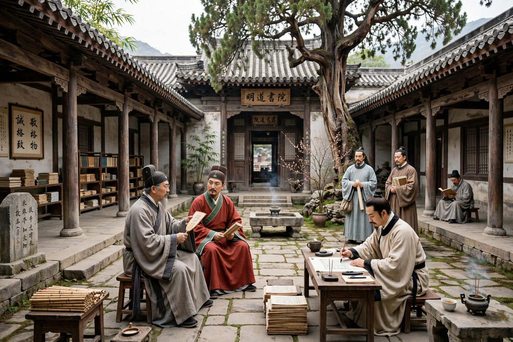

Neo-Confucianism

Origin: Song dynasty China, 11th–12th centuries
Key figures: Zhou Dunyi, Cheng Hao, Cheng Yi, Zhang Zai, Zhu Xi, Lu Jiuyuan, Wang Yangming
Core concepts: li (principle), qi (material force), xin (mind-heart)
Neo-Confucianism is a form of Confucian philosophy that developed in China during the Song and Ming dynasties, partly in response to the intellectual challenges of Buddhism and Daoism. It combined the ethical and social concerns of classical Confucianism with a systematic metaphysics of principle (li) and material force (qi), and it became the orthodox ideology of the Chinese state and its examination system for over six centuries.
Development
Precursors such as Han Yu attacked Buddhism in the Tang. In the 11th century the "Five Masters" of Northern Song — Zhou Dunyi, Shao Yong, Zhang Zai and the brothers Cheng Hao and Cheng Yi — rebuilt Confucian thought around cosmology and self-cultivation. Zhu Xi (1130–1200) synthesised their work, elevated the Four Books (with his commentaries) as the core curriculum, and taught the "investigation of things" (gewu) as the path to understanding principle. His Cheng–Zhu school became examination orthodoxy from 1313 until the examinations were abolished in 1905.
The Lu–Wang school
Lu Jiuyuan argued that "the mind is principle," a position debated with Zhu Xi at the famous Goose Lake meeting (1175). Wang Yangming (1472–1529) developed this into the doctrine of innate knowledge (liangzhi) and the unity of knowledge and action, the great Ming alternative to Cheng–Zhu orthodoxy.
Spread and influence
Neo-Confucianism shaped education, family ritual, law and governance in China and spread widely: it became state orthodoxy in Joseon Korea, deeply influenced Tokugawa Japan, and entered Vietnam. Jesuit missionaries transmitted its ideas to Europe, where Leibniz and others engaged with them. Though attacked in the 20th century as feudal ideology, it remains central to understanding East Asian intellectual history, and "New Confucian" thinkers have revived it in modern form.
See also: Zhu Xi · History of China